Tags: 导入Edge::1-27
Tokenizer 的输入是什么？其七个输入参数分别是什么？三个返回值又是什么？
Tokenizer 的输入为原始文本。其输入参数分别为 text、max_len、padding、truncation、add_special_token、return_tensor、return_attention_mask。输出值分别为 token_id、attention_mask、token_type_id。
Tags: 导入Edge::1-27
Tokeniser接收原始文本text后，会进行哪两个步骤的处理？
答案是分词与编码成id序列。
Tags: 导入Edge::1-27
Bert模型的架构是怎样的？包含哪两个层？
答案是包含embedding层与编码器层。
Tags: 导入Edge::1-27
数据经过Bert模型的编码embedding层后，会分别得到哪三个输出？
分别是token_embedding、positional_embedding以及token_type_embedding。
Tags: 导入Edge::1-27
bert模型编码器层的输入和输出分别是什么？
其输入是由三个embedding按位相加得到的嵌入矩阵，输出则是last_hidden_state和pooler_output。
Tags: 导入Edge::1-27
哪个token经过哪两次变换可得到pooler_output？
[CLS]对应的token经过全连接层以及tanh激活函数变换后可得到pooler_output。
Tags: 导入Edge::1-27
使用bert模型时，原始输入文本经过何种处理可得到那三个变量？后续又需经过哪两个阶段的处理，每个阶段会生成什么，最终得到last_hidden_state和pooler_output？
原始文本经tokeniser处理后得到Input_id、attention_mask、token_type_id。后续经过bert内部的embedding层和编码器层，分别得到由三个embedding按位求和得出的嵌入矩阵，以及词向量last_hidden_state和句向量pooler_output。
Tags: 导入Edge::1-27
Pipeline方法和join方法中，各自数据集中的每一行分别对应什么内容？
在Pipeline方法中，每一行包含四列，分别为主体、客体、关系以及原始文本，每一行对应一个spo3元组；而在joint方法中，每一行是一个字典，字典内有两个键，分别是text和spo_list。spo_list中包含多个spo3元组，即一行对应多个spo3元组。
Tags: 导入Edge::1-27
Bert模型经过embedding层后会得到三个embedding，后续是如何处理这些embedding的？它们又会被传送到哪里？
实际上，得到的这三个embedding会按位相加，合成一个嵌入矩阵，之后被送入编码器层。
Tags: 导入Edge::1-27
“要事为先”原则主张在早晨选择具有挑战性的任务去完成，那么这类具有挑战性的任务包含哪两种呢？
一种是学习新知识，另一种是解决复杂且难度较高的问题。
Tags: 导入Edge::1-27
分散学习是如何实现分散的呢？
具体做法是将学习任务分散到一周内的多个时段。
Tags: 导入Edge::1-27
分层学习需要区分哪两种知识？
其核心是分阶段进行，那么每个阶段对应的学习闭环是怎样的？
分层学习需要区分当前能够理解的知识和当前无法理解的知识。每个阶段都对应由学习、笔记、复习这三个步骤构成的学习闭环。
Tags: 导入Edge::1-27
在学习过程中遇到极难理解的内容时，应采取什么应对策略？
分层学习的策略，可以先标记这些难以理解的内容，然后复习之前已经掌握的内容，复习完毕后再回过头来看这些标记的内容。
Tags: 导入Edge::1-27
为何用自己的话复述信息能加深对其的理解？
这是因为用自己的话复述时会尽可能减少冗余表述，会对信息进行压缩和简化。使用更精准的词汇进行描述，从而加深对信息的理解。
Tags: 导入Edge::1-27
为什么早起之后的学习任务策略是将“要事为先”和“分层学习”这两种学习策略搭配使用呢
早晨起来时精力最为充沛，适合去攻克最难的任务，这正对应“要事为先”策略。然而，可能会出现当前任务远超自身水平、难度过高的情况，导致学习进度受阻，此时就需要运用“分层学习”策略，实现逐层深入学习。
Tags: 导入Edge::1-27
LSTM 为什么会缓解梯度消失的问题？【那两个改进？】
LSTM（长短期记忆网络）通过引入“细胞状态”（cell state）以及门控机制来缓解梯度消失问题。
Tags: 导入Edge::1-27
LSTM 里面，为什么细胞状态可以防止梯度在传播过程中消失？【通过什么数学运算来防止梯度消失】
细胞状态是 LSTM 中的一种长程记忆机制，它能够在整个序列中跨时间步进行信息的传递，并通过累加操作来防止梯度在传播过程中消失。
Tags: 导入Edge::1-27
TextCNN 里面的这个CNN是一种什么类型的模型，整个这个模型用于什么用途？
用于文本分类的卷积神经网络模型。
Tags: 导入Edge::1-27
TextCNN 核心思想是什么？【哪两个层以及分别什么作用？】
通过卷积操作提取文本中局部的特征，并通过最大池化层获得最重要的特征信息。
Tags: 导入Edge::1-27
TextCNN 采用了多个不同大小的卷积核，以捕捉什么，然后怎么样？
以捕捉不同粒度的文本特征，然后将这些特征合并后进行分类。
Tags: 导入Edge::1-27
TextCNN 的结构 是哪四个层？
输入层 卷积层 池化层 全连接层
Tags: 导入Edge::1-27
TextCNN 的结构 输入层作用是什么？【将输入文本表示成什么？】
输入层：通常会将输入文本表示为一个矩阵，其中每一行是一个词的嵌入表示。文本中的每个词语通过嵌入层（如 nn.Embedding）映射为固定维度的稠密向量。
Tags: 导入Edge::1-27
TextCNN 的结构 卷积层作用是什么？【卷积层使用多个什么来进行操作？来提取什么？】
卷积层：TextCNN 使用多个卷积核来进行卷积操作，每个卷积核的大小可以不同（例如 3、4、5），以便提取不同范围的局部特征/提取不同粒度的特征。。卷积层的作用是提取文本中的局部上下文信息。
Tags: 导入Edge::1-27
TextCNN 的结构 池化层作用是什么？【用来选择什么？】
池化层：在卷积操作之后，TextCNN 使用最大池化层来选择每个卷积核生成的特征图中的最大值，从而保留最重要的特征。
Tags: 导入Edge::1-27
TextCNN 的结构 全连接层作用是什么？
全连接层：池化后的特征通过一个全连接层进行进一步的处理，最后输出分类结果。
Tags: 导入Edge::1-27
TextCNN 从名字上可以看出它是什么神经网络,以及作用是什么？以及他包括哪两个层以及这两个层分别是用来干什么？
TextCNN 是一种专门用来做文本分类的卷积神经网络，它的做法是通过卷积层来提取文本中的局部特征，然后用池化层选出最重要的特征来做分类。
Tags: 导入Edge::1-27
描述TextCNN 的处理过程。
输入层将文本序列转换成矩阵。
卷积层使用不同的卷积核来提取特征，
池化层来选择重要特征，
全连接层做分类。
首先我们会把文本转化为词向量（比如用 nn.Embedding），然后用多个不同大小的卷积核来对文本进行卷积操作，提取不同大小范围的特征。接着，经过池化层后，我们选出每个特征图中最重要的部分，最后通过全连接层做分类。
Tags: 导入Edge::1-27
PyTorch 里面nn.Embedding 的作用是什么？
nn.Embedding 是 PyTorch 中用于将离散的词汇或符号映射到连续的稠密向量空间的一个层。
Tags: 导入Edge::1-27
PyTorch 里面nn.Embedding 的核心思想是什么？【通过什么表的方式将什么映射成什么？】
通过查找表（lookup table）的方式，将每个词语或符号映射到一个低维的稠密向量。
Tags: 导入Edge::1-27
PyTorch 里面nn.Embedding 的输入和输出分别是什么？
nn.Embedding 层的输入是一个整数索引的序列，这些索引代表词汇表中的词语或符号。输出：输出是一个稠密的向量表示，每个词语被映射成一个固定大小的向量（embedding vector）。
Tags: 导入Edge::1-27
PyTorch 里面nn.Embedding 里面的向量表示是否会更改，以及什么时候会被调整？以及为什么会被调整？
是会改变，向量在训练过程中通过反向传播调整，以更好地表示词汇的语义信息。
Tags: 导入Edge::1-27
PyTorch 里面nn.Embedding 层有两个主要参数，分别是什么名字以及什么含义？
- num_embeddings：表示词汇表中词的数量，即词汇表的大小。
- embedding_dim：表示每个词汇被嵌入到的向量的维度。
Tags: 导入Edge::1-27
nn.Embedding 其实是一个什么表？专门用来把词或者符号映射成一个低维的向量。这个向量包含了什么信息？
查找表，这个向量包含了词语的语义信息。
Tags: 导入Edge::1-27
word2vec 是否也是预训练的模型？意味着什么？
是的，word2vec 通常被视为一种预训练的模型，包含了大量单词的词向量。
Tags: 导入Edge::1-27
word2vec 模型通常在什么样的数据上进行训练，以学习什么？
大规模无标签文本数据（如维基百科、新闻文章等），学习通用的词向量。
Tags: 导入Edge::1-27
word2vec 生成的是静态词向量，这是什么意思？
即每个单词在所有上下文中都有相同的向量表示。
Tags: 导入Edge::1-27
word2vec 生成的是否是静态词向量?
是的。
Tags: 导入Edge::1-27
word2vec 生成的词向量的缺点是什么？以及为什么？
是静态的，固定的，无法区分多义词。
无法捕捉同一单词在不同上下文中的不同含义。因为他是静态词向量，即每个单词在所有上下文中都有相同的向量表示。
Tags: 导入Edge::1-27
embedding层的词向量参数是可训练的情况下，什么时候更新？
在反向传播过程中会根据梯度进行更新。
Tags: 导入Edge::1-27
固定词向量 和 可训练词向量分别是什么意思？【这里的可训练指的是根据什么来进行优化？】
固定词向量：词向量在训练过程中保持不变。可训练词向量：词向量根据任务的损失函数进行调整和优化。
Tags: 导入Edge::1-27
可训练词向量：词向量根据任务的哪个函数进行调整和优化。
损失函数。
Tags: 导入Edge::1-27
word2vec与BERT的生成的词向量类型的主要区别是什么？
Tags: 导入Edge::1-27
word2vec与BERT的模型架构的主要区别是什么？
Tags: 导入Edge::1-27
使用BERT进行特定任务分类是否属于微调？微调是否意味着词嵌入层和编码器层的所有参数都会被改变？
使用BERT进行特定任务分类属于微调。以及微调意味着词嵌入层和编码器层的所有参数都会被改变。
Tags: 导入Edge::1-27
使用带标签的数据进一步训练模型，使其适应具体下游任务。
将预训练好的BERT模型应用到具体的下游任务（如文本分类、问答系统等），并在该任务的有标签数据上进一步训练模型。
Tags: 导入Edge::1-27
什么是BERT的预训练（Pre-training）？
BERT在大规模未标注文本数据上进行的训练，学习通用的语言表示。
这一阶段包括任务如掩码语言模型（Masked Language Model, MLM）和下一个句子预测（Next Sentence Prediction, NSP）。
Tags: 导入Edge::1-27
预训练的BERT + 任务特定层（例如，线性分类层）应用于具体的文本分类任务时，哪些参数会被更新？
BERT的所有可训练参数都会被更新，包括：
- 词嵌入层（Embedding Layer）：将输入的tokens转换为向量表示的层。
- Transformer编码器层（Encoder Layers）：包括多层自注意力机制和前馈神经网络。
- 任务特定层：例如，你添加的线性分类层。
Tags: 导入Edge::1-27
Transformer编码器层（Encoder Layers）：包括哪两个部分？
多头自注意力机制和前馈神经网络。
Tags: 导入Edge::1-27
损失函数：例如交叉熵损失，用于衡量什么和什么之间的差异。
模型预测与真实标签。
Tags: 导入Edge::1-27
梯度计算是计算谁相对于谁的什么？
计算损失函数相对于每个参数的梯度。
Tags: 导入Edge::1-27
通过计算损失函数相对于每个参数的梯度，使用什么来更新什么，以最小化什么。
使用优化器（如Adam）更新所有参数，以最小化损失。
Tags: 导入Edge::1-27
在BERT模型后添加一个线性层用于分类是否也属于微调？
是的。
Tags: 导入Edge::1-27
通常在BERT的输出上添加一个线性层，这个线性层的作用是什么？
用来适配具体的下游任务。用于将BERT生成的表示转换为具体任务的输出（如类别概率）。
Tags: 导入Edge::1-27
反向传播与优化：
计算损失相对于哪些参数的梯度，包括BERT的参数和线性层的参数。
所有可训练参数。
Tags: 导入Edge::1-27
反向传播与优化：
计算得到参数的梯度之后，使用优化器更新所有参数，是为了什么？
为了最小化损失。
Tags: 导入Edge::1-27
在BERT模型后添加一个线性层用于分类任务的架构，并在该任务上训练整个模型，是否属于微调。
是的。
Tags: 导入Edge::1-27
在BERT模型后添加一个线性层用于分类任务的架构，并在该任务上训练整个模型，那么在训练过程中，只有线性层的参数会被更新吗？
不是的，BERT的词嵌入层和编码器层的参数也会更新。
Tags: 导入Edge::1-27
训练BERT进行特定任务分类，模型的参数是否会变化？
会变化。
Tags: 导入Edge::1-27
训练BERT进行特定任务分类，模型的参数会发生变化，包括哪些参数呢？
包括词嵌入层embedding和编码器层encoder在内的所有可训练参数。
Tags: 导入Edge::1-27
使用BERT进行文本分类时，BERT模型的参数是根据什么来更新的？
基于分类任务的损失函数。
Tags: 导入Edge::1-27
在模型的训练阶段，通常情况下，什么参数都会根据损失函数通过哪两个阶段进行更新？
所有可训练的参数，反向传播和梯度下降。
Tags: 导入Edge::1-27
在bert模型的训练阶段，没有明确冻结某些层，可训练参数是否会进行更新？包括哪两个层？以及根据谁，在哪个阶段进行更新?
是的，全部更新，包括词嵌入层embedding和编码器层encoder。
根据损失函数通过反向传播和梯度下降进行更新。
Tags: 导入Edge::1-27
仅使用BERT这个预训练模型进行分类，是否属于微调以及为什么？
属于微调的范畴。微调过程中，模型的参数（包括词嵌入层和编码器层）会根据分类任务的数据进行调整，以提升分类性能。
Tags: 导入Edge::1-27
当你仅使用BERT进行分类任务时，这个过程属于微调预训练好的BERT模型，还是对其进行预训练。
属于微调。
Tags: 导入Edge::1-27
在预训练阶段，BERT通过大量的无标签文本数据进行训练，目标是学习到什么？
学习到词汇和句子的通用表示。
Tags: 导入Edge::1-27
大多数BERT的实现（如Hugging Face的Transformers库）在微调时默认是否会更新词嵌入层？
是的，默认更新所有参数，包括词嵌入层。
Tags: 导入Edge::1-27
BERT使用的是“无标签”的文本数据进行预训练，是否是无监督学习？以及为什么？
不是的，属于自监督学习（Self-Supervised Learning），训练过程中所用的标签不是人工标注的，而是来自于数据本身。预训练任务本身生成了标签（如被掩盖的词、句子是否相邻），这实际上是一种自监督学习。
Tags: 导入Edge::1-27
预训练 和 微调阶段，BERT分别使用什么样的数据来进行训练 ？
利用大规模未标注文本进行预训练，然后使用标注数据进行微调。
Tags: 导入Edge::1-27
BERT的词嵌入层 包括哪三个部分？
词嵌入、位置嵌入和分段嵌入。
Tags: 导入Edge::1-27
BERT模型预训练和微调阶段的目的分别是什么？
预训练阶段：通过自监督（无标注）任务在大规模文本上学习词向量和语言表示。微调阶段：通过监督（有标注）任务在特定数据上进一步优化词向量和模型参数，以提升特定任务的性能。
Tags: 导入Edge::1-27
BERT的预训练阶段，是如何进行预训练的？
通过两种预训练任务来实现预训练的，分别是MLM，以及NSP。
Tags: 导入Edge::1-27
元组是否是不可变类型?以及他可以用于什么？
是不可变类型，一旦创建，元组中的元素不能被修改、添加或删除。不可变性使得元组可以用作字典的键或存储在其他集合中，因为它们的哈希值是固定的。
Tags: 导入Edge::1-27
为什么元组可以用作字典的键？
因为元组是不可变类型，不可变性使得它们的哈希值是固定的。
Tags: 导入Edge::1-27
字符串是否是不可变类型?
是的，是不可变类型。
Tags: 导入Edge::1-27
字符串是不可变类型，这导致了什么情况？
任何对字符串的修改操作（如拼接、替换）都会生成一个新的字符串对象，而不是在原有字符串上进行修改。
Tags: 导入Edge::1-27
字符串是字符的序列，一旦创建，字符串中的字符是否可以被更改。
不可以。
Tags: 导入Edge::1-27
配置 OLLAMA_MODELS 环境变量的主要作用是什么？
- 变量名：OLLAMA_MODELS
- 变量值：D:\Work\ollama\models
指定 Ollama 模型存储的目录。通过设置该变量，您可以控制 Ollama 将下载的模型存储在特定的位置，而不是默认路径。
Tags: 导入Edge::1-27
直接在 CMD 窗口中运行 ollama run qwen2.5:1.5b 命令来下载并运行该模型。
模型将会被下载到哪里？
如果正确配置了 OLLAMA_MODELS 环境变量，会下载到OLLAMA_MODELS 环境变量对应的文件路径。
Tags: 导入Edge::1-27
ollama run <model-name>：此命令的功能是什么？
会检查指定的模型是否已存在。如果不存在，Ollama 会自动从其模型库下载该模型并存储在指定的目录中，然后运行该模型。
Tags: 导入Edge::1-27
设置 OLLAMA_MODELS 环境变量为 D:\Work\ollama\models，作用是什么？
Ollama 会优先使用该路径作为模型的存储位置。
Tags: 导入Edge::1-27
Ollama 的作用是什么？
是一个用于运行本地大型语言模型（LLM）的工具，类似于其他如 Hugging Face 的工具。它允许用户在本地计算机上运行预训练的语言模型，而无需依赖云服务。
Tags: 导入Edge::1-27
1.5b 指的是什么意思？
模型的参数规模（15亿参数）。
Tags: 导入Edge::1-27
原始输入数据 (BIO格式的文本文件) 具体内容如下所示，经过load data函数处理之后，变成什么样子？
扬 B-LOC
州 I-LOC
四 O
吨 O
炒 O
饭 O
北 B-LOC
京 I-LOC
的 O
天 O
气 O
sentences = [
['扬', '州', '四', '吨', '炒', '饭'],
['北', '京', '的', '天', '气']
]
labels = [
['B-LOC', 'I-LOC', 'O', 'O', 'O', 'O'],
['B-LOC', 'I-LOC', 'O', 'O', 'O']
]
Tags: 导入Edge::1-27
下面代码里面的 两个变量 self.sentences, self.labels格式如下所示，def collate_fn(batch): 里面的这个batch参数应该是什么呢？
class NERDataset(Dataset):
.....
def __getitem__(self, idx):
# 返回原始数据，不做预处理
sentence = self.sentences[idx]
labels = self.labels[idx]
return sentence, labels
----------------------
sentences = [
['扬', '州', '四', '吨', '炒', '饭'],
['北', '京', '的', '天', '气']
]
labels = [
['B-LOC', 'I-LOC', 'O', 'O', 'O', 'O'],
['B-LOC', 'I-LOC', 'O', 'O', 'O']
]
batch = [
# 第一个样本
(
['扬', '州', '四', '吨', '炒', '饭'], # sentence
['B-LOC', 'I-LOC', 'O', 'O', 'O', 'O'] # labels
),
# 第二个样本
(
['北', '京', '的', '天', '气'], # sentence
['B-LOC', 'I-LOC', 'O', 'O', 'O'] # labels
)
]
Tags: 导入Edge::1-27
在collate_fn这个函数里面， batch 参数 是什么类型？以及里面的每个元素是什么类型？
batch 参数确实是一个列表，其中每个元素是一个 元组，这个元组包含了一个句子和其对应的标签.
Tags: 导入Edge::1-27
tokenizer.batch_encode_plus 函数中的第一个参数 是什么名称以及必须是一个什么类型？
text ，包含字符串的列表。
Tags: 导入Edge::1-27
tokenizer.batch_encode_plus 这个函数里面的text参数的 内容如下。这个函数的返回值encoding应该是什么样的结果呢？
texts = [
'扬州四吨炒饭',
'北京的天气'
]
encodings = {
'input_ids': [
[101, 2207, 4545, 1744, 3209, 3696, 6121, 102], # [CLS] 扬州四吨炒饭 [SEP]
[101, 1266, 3221, 4638, 1921, 3698, 102] # [CLS] 北京的天气 [SEP]
],
'attention_mask': [
[1, 1, 1, 1, 1, 1, 1, 1],
[1, 1, 1, 1, 1, 1, 1]
]
}
Tags: 导入Edge::1-27
相似性搜索基于什么？
基于向量。
Tags: 导入Edge::1-27
在NLP中，文本文档的语义如何表示？
由向量表示。
Tags: 导入Edge::1-27
Ollama中的嵌入模型，其接受的输入和产生的输出分别是什么？
输入为文档文本，输出则是向量。
Tags: 导入Edge::1-27
文档内容如何进入FAISS数据库？【经过哪个模型转换成什么？】
经嵌入模型转换为向量。
Tags: 导入Edge::1-27
为何文档需经过嵌入模型才能捕捉语义信息？
我们使用向量来表示语义信息。因为文本的语义信息由高维空间的向量表示。
Tags: 导入Edge::1-27
PromptTemplate类在初始化时需传入的两个参数分别是什么？
Input_value字符串列表和由三引号构成的template字符串。
Tags: 导入Edge::1-27
PromptTemplate的目的是整合哪两部分信息？
一是用户的question，二是该question对应的context上下文。
Tags: 导入Edge::1-27
PromptTemplate的实例化对象prompt对应的API是什么？
format函数。
Tags: 导入Edge::1-27
PromptTemplate的实例化对象的format函数有何作用？【将哪两个东西拼接到哪里？】
将question和context拼接至模板中。
Tags: 导入Edge::1-27
进行similarity search相似度搜索的前置步骤是什么？
加载向量数据库。
Tags: 导入Edge::1-27
进行相似度搜索（similarity search）的目的是什么？
旨在查询与问题相关的上下文，并拼接成提示信息（prompt）。
Tags: 导入Edge::1-27
在自然语言处理（NLP）中，文本的向量代表什么？
文本的向量代表文本的语义。
Tags: 导入Edge::1-27
三种常见的静态词嵌入模型分别为 word2vec、GloVec 和 FastText。前两者分别基于何种训练任务获得？而后者又基于哪个模型？它提供了哪些优化点，解决了什么问题？
前两者分别采用跳词、词袋【Skip-gram, CBOW】以及矩阵分解的方式进行训练。而最后一个模型基于 word2vec 构建，其优化点在于采用了 n-gram 子词分词，解决了 OOV（未登录词）问题。
Tags: 导入Edge::1-27
在 NER（命名实体识别）中，经过预处理后的数据格式为：token 与标签一一对应，之后，将其组合成完整句子。这些句子会以单个句子为单位被输送至 BERT 模型，但在此之前需先经过 tokenizer 进行分词操作。然而，分词过程会产生额外的子 token，这就致使原本的 token 与标签无法再保持一一对应关系，那么该如何解决这一问题呢？
解决办法是进行标签扩展。
Tags: 导入Edge::1-27
首次切换至新的 conda 环境时，会出现一个名为“conda executable”的选项。针对该选项，我们应选择哪个路径下的哪个文件呢？
答案是选择“Anaconda3/condabin/conda.bat”。
Tags: 导入Edge::1-27
使用 BERT 中的 tokenize 分词器进行分词可能会引发什么问题呢？
会出现子词问题，即一个 token 有可能被拆分成多个子 token。
Tags: 导入Edge::1-27
下面图片中的三个部分从左往右分别代表着什么？
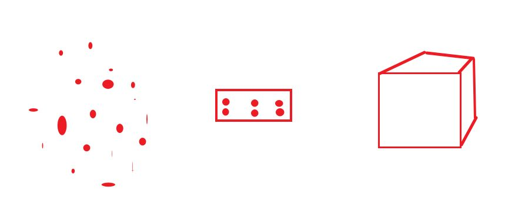
最左侧这个部分代表的是数据data。
中间这个部分代表的是data_loader。
右边这个代表的是模型model。
Tags: 导入Edge::1-27
P(我想去打篮球)
针对这个语料库的二元模型（bigram），如何计算这个句子的概率？
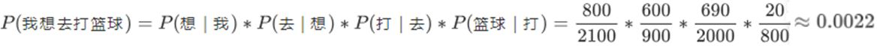
Tags: 导入Edge::1-27
BLEU根据`n-gram可以划分成多种评价指标，其中n-gram里面的n指的是什么？
指的是连续的单词个数为n。
Tags: 导入Edge::1-27
评估指标众多，如准确率、召回率以及 F1 分数，在简历中的项目究竟应以哪一项为准呢？
在简历中直接填写 F1 分数即可。
Tags: 导入Edge::1-27
Sequence classification 和 token classification 分别对应什么任务？
它们分别对应文本分类任务以及命名实体识别任务（NER）。
Tags: 导入Edge::1-27
Rouge-N 这个名称里面的N是什么意思？
N指的是N-gram，也就是将模型生成的结果和标准结果按N-gram拆分后，计算召回率。
Tags: 导入Edge::1-27
代码运行后，判断其是否报错的唯一依据是什么？
查看最后返回的exit code 是0还是1，若为0，则表示代码正常运行成功；若为1，则表明代码运行过程中出现错误。
Tags: 导入Edge::1-27
在“import torch”中，torch是什么类型？是方法、类还是对象？
它是一个对象。
Tags: 导入Edge::1-27
Import关键字后面会跟随一个单词，该单词的首字母有时大写，有时小写。从名字的大小写能推断出什么呢？
如果首字母大写，那么它必定是一个类；如果首字母小写，那么它可能是方法，也可能是对象。
Tags: 导入Edge::1-27
精确率和准确率它们的定义分别是什么？
精确率（Precision）：指在所有被预测为正类的样本中，实际正类样本所占的比例。
准确率（Accuracy）：指所有预测正确的样本占总样本的比例。
Tags: 导入Edge::1-27
在大多数情况下，精确率和准确率是不同的，因为它们评估的是不同的方面，具体来说如何理解呢？
- 精确率更关注预测为正类的样本的质量，即真正的正类占预测为正类的比例。
- 准确率评估的是所有正确预测的比例，包括正类和负类。
Tags: 导入Edge::1-27
精确率和准确率通常不等价，因为它们评估的是不同的方面。他们分别侧重的是哪个方面？ 【他们的分母有什么不同？】
精确率侧重于正类预测的质量，
而准确率则评估的是，所有样本里面，预测的正确性。
Tags: 导入Edge::1-27
分类任务侧重于标签的准确预测，评估标准是哪四个？
准确率、精确率、召回率、F1分数。
Tags: 导入Edge::1-27
分类任务侧重于对谁的预测？
对标签的预测。
Tags: 导入Edge::1-27
生成式任务侧重于生成文本与真实文本的相似度，评估标准是哪三个？
BLEU、ROUGE、困惑度（Perplexity）。
Tags: 导入Edge::1-27
对离散标签的预测和对连续生成文本的预测分别对应的是什么任务？
分类任务通常是离散的标签预测，
而生成式任务关注的是连续的生成文本质量。
Tags: 导入Edge::1-27
马尔可夫假设具体来说是什么？
即某个词的概率只依赖于它前面的有限个词。
Tags: 导入Edge::1-27
模型基于马尔可夫假设，在bigram模型中，以及在trigram模型中，分别考虑的是当前词和什么的关系？
在bigram模型中，你只考虑当前词和前一个词的关系；
在trigram模型中，你考虑当前词和前两个词的关系。
Tags: 导入Edge::1-27
N-Gram 模型基于哪个假设？这里的N代表什么意思？
马尔可夫假设。只看n个前面的词，假设这些词就能决定当前词的概率。
Tags: 导入Edge::1-27
语言模型的主要类别是四个，分别是N-Gram、神经网络、预训练模型、大语言模型。分别对应的例子是什么？
- N-Gram 模型：只看n个前面的词，假设这些词就能决定当前词的概率。bigram 和 trigram模型。
- 神经网络语言模型（NNLM）：基于RNN或LSTM的模型来生成句子。
- 预训练模型：GPT、BERT。
- 大语言模型（LLM）：GPT-3、ChatGPT、PaLM等模型。
Tags: 导入Edge::1-27
什么是预训练语言模型。【通过什么进行训练，学会了什么？然后通过什么来应用的特定任务？】
它们先通过大规模文本进行训练，学会了很多通用的语言模式和语法结构，然后通过微调应用到特定的任务上，如文本分类、命名实体识别等。
Tags: 导入Edge::1-27
预训练语言模型，通过微调应用到特定的任务上，给两个例子。
文本分类、命名实体识别等。
Tags: 导入Edge::1-27
常用的N-Gram语言模型是什么？
bigram（二元模型）和trigram（三元模型）通常就是常见的N-Gram模型。
Tags: 导入Edge::1-27
语言模型的基本任务是计算什么，通常用来衡量一个句子在某种语言中的什么程度？
计算给定句子发生的概率。自然程度。
Tags: 导入Edge::1-27
N-Gram语言模型则基于哪个假设，即当前词的出现仅依赖于什么。也就是说，计算某个词的概率时，我们只考虑它前面的`n-1`个词的上下文信息。
马尔可夫假设，依赖于前面`n`个词。
Tags: 导入Edge::1-27
N-Gram语言模型的优势在于简单且直观，但局限性是它忽略了什么？
忽略了更长远的上下文关系。
Tags: 导入Edge::1-27
N-Gram语言模型
最常用的N-Gram模型是`bigram`和`trigram`，分别考虑哪个词和那个词对当前词的影响。
前一个词和前两个词。
Tags: 导入Edge::1-27
`bigram` 和 `trigram` 分別考慮的是什麽？
`bigram`模型只考虑相邻的词对下一个词的影响，而`trigram`则会考虑前两个词的影响。
Tags: 导入Edge::1-27
Bigram语言模型是哪个语言模型的一种特例，它基于马尔可夫假设，认为当前词的概率仅依赖于谁？
N-Gram，前一个词。
Tags: 导入Edge::1-27
Bigram模型计算句子中每个词Wi的概率是什么？【公式】
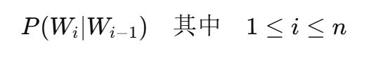
Tags: 导入Edge::1-27
Bigram模型它的缺点是什么？【只能捕捉什么而无法理解什么。】
只能捕捉到短期的上下文信息，无法理解更长距离的词语关系。
Tags: 导入Edge::1-27
模型的每个参数通常是什么类型以及多少大小？
一个浮点数（float32），每个float32占用4字节（32位 = 4字节）。
Tags: 导入Edge::1-27
将字节转换为GB时，通常使用的单位换算过程是什么？
1GB = 1024MB1MB = 1024KB1KB = 1024字节
Tags: 导入Edge::1-27
模型是70亿参数，那么大概需要多少G的显存？【计算过程】
280亿字节转为GB的过程是
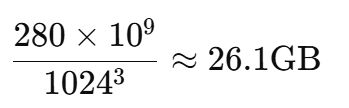
Tags: 导入Edge::1-27
仅计算模型参数占用的显存是不完整的。这是为什么呢？
模型的显存需求还包括梯度、优化器状态、激活值和中间计算结果等。例如，反向传播过程中需要存储每个层的梯度，这会增加额外的显存消耗。
Tags: 导入Edge::1-27
通常，梯度的存储需要与谁一样大的内存？
模型参数。
Tags: 导入Edge::1-27
模型有70亿（7*10^9）个参数。下面的计算过程如下，那么计算出来的显存应该是谁对应的大小。
模型参数对应的显存大小。不能代表整个模型所需要的显存。
Tags: 导入Edge::1-27
模型有70亿（7*10^9）个参数。 计算出来的显存应该是26G，为了更保守地估算显存，通常怎么做来覆盖梯度和其他中间存储的内存。
可以将参数存储的需求乘以一个额外的因子（如1.5x或2x）。
Tags: 导入Edge::1-27
【面试题】模型是70亿参数，那么大概需要多少G的显存？【思路和过程】
- 计算模型参数的内存占用（
模型参数数目 * 每个参数字节数）。 - 转换为GB（字节 -> KB, MB -> GB）。
- 考虑梯度和优化器的占用，可能需要乘以一个因子（例如1.5x或者2x）。
Tags: 导入Edge::1-27
nn.Embedding 这个层 将什么映射到什么？
单词的整数索引ID映射到单词的词向量。
是 PyTorch 中一个用于将离散的整数索引映射到连续的稠密向量表示的层。
Tags: 导入Edge::1-27
nn.Embedding 本质上可以看作是一个什么，它存储了一个矩阵，矩阵的维度是什么？
查找表，词汇表大小与嵌入维度的矩阵。
Tags: 导入Edge::1-27
nn.Embedding 本质上是矩阵，里面的 每一行对应什么？
一个单词的向量表示。
Tags: 导入Edge::1-27
nn.Embedding 本质上是矩阵，该矩阵的形状为(V, D)。这两个字母分别代表什么？
一个词汇表大小为V，嵌入维度为D的模型。
Tags: 导入Edge::1-27
在训练过程中，nn.Embedding 会通过哪个过程来学习到每个词的嵌入向量。
反向传播过程。
Tags: 导入Edge::1-27
在训练过程中，nn.Embedding 里面的这些向量的学习是通过优化什么来完成的。
优化某个任务（如语言建模、文本分类等）中的损失函数。
Tags: 导入Edge::1-27
nn.Embedding 的输入和输出的结果 分别是什么？
输入的内容是ID序列，输出的内容是词向量组合。
nn.Embedding 的输入通常是一个整数索引序列，代表了一个文本序列中的词。模型会根据这些索引查找对应的嵌入向量，输出的结果是这些嵌入向量的组合。
Tags: 导入Edge::1-27
【面试题】请讲解一下nn.embedding他的思想和原理是什么？
【它的本质是什么？内部维护了什么？作用是将什么对应到什么？】
nn.embedding 本质是“查找表”，它的作用就是把一个整数索引对应到一个固定维度的向量。这个向量就是我们常说的“嵌入向量”。
nn.Embedding 内部维护了一个矩阵，矩阵的行数就是词汇表的大小，列数是向量的维度。
这些嵌入向量最开始是随机初始化的，在训练的过程中，模型会通过优化任务的损失函数，逐渐调整这些向量，使它们能更好地表达单词之间的关系。
Tags: 导入Edge::1-27
1 Byte（字节）= 8 bits（位）。
Tags: 导入Edge::1-27
b：指的是 bit（位）。B：指的是 Byte（字节）。
例如：1 KB = 1024 Bytes，不是 1024 bits。
Tags: 导入Edge::1-27
Byte（字节）。
Tags: 导入Edge::1-27
log(p1)+log(p2)+...log(pn) 等于什么？
log(p1*p2*...*pn)
Tags: 导入Edge::1-27
自编码模型（Auto Encoder），代表作BERT，其特点为：Encoder-Only。
Tags: 导入Edge::1-27
AE模型 基本原理是什么？通常用于什么任务？
基本原理：是在输入中随机MASK掉一部分单词，根据上下文预测这个词。
AE模型通常用于内容理解任务，比如自然语言理解（NLU）中的分类任务：情感分析、提取式问答。
Tags: 导入Edge::1-27
Bert模型的结构图如下，有三个不同的颜色，分别对应三个模块。这三个模块分别是什么？
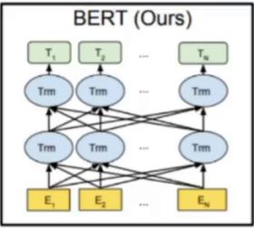
- 底部黄色的模块表示的是 Embedding模块，嵌入层。
- 中间蓝色的表示Encoder编码器模块。
- 顶部的绿色表示微调模块。
Tags: 导入Edge::1-27
Bert模型的结构图如下，最底下是embedding模块，它有几个embedding。
有三个embeddings分别是。，Token bedding ，position embedding和segment embedding，segment embedding用来区分 两个句子，完成句子对的任务。
Tags: 导入Edge::1-27
Bert模型的结构第一层是embedding层。
其中，Token
Embeddings:
词嵌入张量,
第一个单词对应的是什么？以及用于什么任务？
对应的是CLS标志, 可以用于之后的分类任务。
Tags: 导入Edge::1-27
Bert模型的结构第一层是embedding层。
其中，Segment Embeddings 用于什么任务？
用于句子对任务，后续的两个句子为输入的预训练任务。
Tags: 导入Edge::1-27
Bert模型的结构第一层是embedding层。
其中，整个Embedding模块的输出张量是哪些张量的什么操作的结果？
就是这3个张量Token bedding ，position embedding和segment embedding的直接加和结果。
Tags: 导入Edge::1-27
【面试题】手绘Bert模型的结构里面的编码器层。
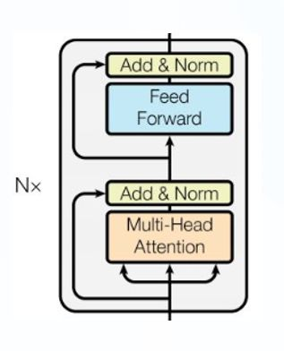
Tags: 导入Edge::1-27
【面试题】手绘Transformer模型的结构。
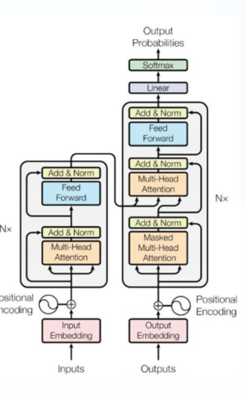
Tags: 导入Edge::1-27
【面试题】BERT的预训练任务分别是什么？中英文名称。
- MLM，Masked LM (带掩码的语言建模任务)
- NSP，Next Sentence Prediction (下一句话预测任务)
Tags: 导入Edge::1-27
【面试题】BERT的预训练任务里面，具体讲解一下MLM任务的内容。【百分之多少的比例参与到这个任务？然后又有哪三个比例分别对应什么操作？】
在原始训练文本中,
随机的抽取15%的token作为参与MASK任务的对象.
•80%的概率下,
用[MASK]标记替换该token.
•在10%的概率下,
用一个随机的单词替换token.
•在10%的概率下,
保持该token不变.
Tags: 导入Edge::1-27
【面试题】BERT的预训练任务里面，具体讲解一下NSP任务的内容。【接受什么作为输入用来预测什么？谁可能被选做句子a以及50%，50%分别是什么？】
模型接收句子对(A, B)作为输入，用于预测句子B是否为句子A的实际后续语句。
• 所有参与任务训练的语句里面，每个句子理论上都有可能被选作句子A，
• 其中50%的句子B是原始文本中紧跟句子A的真实后续语句（标记为IsNext，代表正样本）。
• 另外50%的句子B是从原始文本中随机抽取的语句（标记为NotNext，代表负样本）。
Tags: 导入Edge::1-27
【面试题】BERT的transformer 层数 是多少？
12.
Tags: 导入Edge::1-27
【面试题】BERT的特征维度 是多少？
768。
Tags: 导入Edge::1-27
【面试题】BERT的transformer head数是多少？
12。
Tags: 导入Edge::1-27
【面试题】BERT的总参数量 是多少？
Tags: 导入Edge::1-27
【面试题】BERT的四个关键参数分别是什么？
- transformer层数
- 特征维度
- transformer head数
- 总参数量
Tags: 导入Edge::1-27
目前所学内容主要涵盖理论与实践代码两部分。那么，这两部分分别在何时更为重要呢？
理论部分在面试阶段至关重要，
而实践代码部分在实际工作过程中则发挥着关键作用。
Tags: 导入Edge::1-27
BERT 更适合NLU任务 还是NLG任务？
Tags: 导入Edge::1-27
AR 模型它的英文全称以及中文名称是什么？
自回归模型（Auto Regressive Model）。
Tags: 导入Edge::1-27
AR 模型他的代表作是什么？它的特点是什么？
AR模型，代表作GPT，其特点为：Decoder-Only。
Tags: 导入Edge::1-27
AR 模型的基本原理是什么？通常用于什么任务？
AR模型的基本原理：模型是单向的，仅利用已有信息来生成当前单词的信息。生成过程是逐步生成的。
该模型按照从左至右的方向[单向]进行学习，仅能利用上文或下文的信息。
AR模型通常应用于生成式任务，在长文本生成方面具备强大能力。例如在自然语言生成（NLG）领域的任务中，包括文本摘要、翻译或抽象问答等方面都有出色表现 。
Tags: 导入Edge::1-27
AR 模型 和 AE模型 分别主要用于自然语言的什么任务？
- AR 模型，指的是自回归模型，主要用于自然语言生成任务NLG。
- AE 模型，指的是自编码模型，主要用于自然语言理解任务NLU。
Tags: 导入Edge::1-27
GPT 模型的Embedding嵌入层有哪些组成？
只有Token Embedding以及Position Embedding，没有Segment Embedding。
Tags: 导入Edge::1-27
下面是GPT1 模型的架构，上面的绿色部分是什么意思？
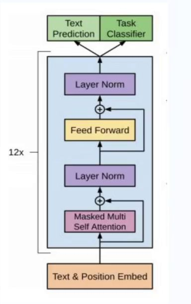
表示的是根据不同的任务进行微调。 任务分为主要两类，一个是 文本预测，另一个是文本分类。
Tags: 导入Edge::1-27
手绘 GPT1模型的架构图。
Tags: 导入Edge::1-27
GPT1模型的架构图，主要分为三部分，分别是什么？
- Embeddings层，包含 Token和position两个embedding。
- 解码器层，
- 微调层，根据不同任务进行微调的层。
Tags: 导入Edge::1-27
手绘 Transformer 模型的架构图里面的解码器层部分。
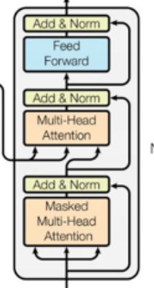
Tags: 导入Edge::1-27
手绘 两个结构图，一个是Transformer里面的解码器层部分。另一个是GPT1的结构。
Transformer里面的解码器层:
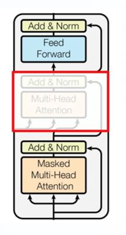
GPT1的结构图:
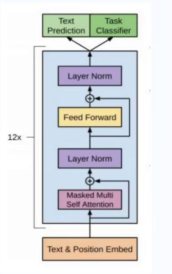
Tags: 导入Edge::1-27
- 无监督的预训练语言模型；
- 有监督的下游任务fine-tunning。
Tags: 导入Edge::1-27
下面这个结构图里面，这几个单词分别指的是什么意思？ 以及右侧对应的流程图是什么意思？
Classification
Entailment
Similarity
Multiple Choice
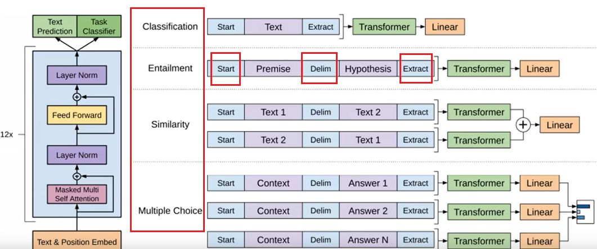
分别表示的是GPT对应的四个下游任务，
然后右侧的图表是不同下游任务分别所对应各自的微调的过程。
Tags: 导入Edge::1-27
下面这个结构图里面，
Entailment 这个下游任务里面的三个单词，Start，Delim，Extract 分别表示什么意思？
仅仅是文本的标记，用来标记文本的开头，文本之间的连接以及文本的结尾。
Tags: 导入Edge::1-27
如图所示， 表示的是GPT 微调下游任务的一个大致的流程。 其中绿色的方框transformer这个部分表示的是什么？ 【是谁的结构?包含哪两个部分？】
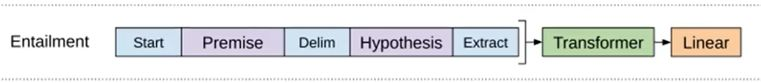
表示的是GPT 结构，也就是Embedding层 再加上 连续12个 解码器层。
Tags: 导入Edge::1-27
Gpt模型的四个关键参数。
- transformer层数
- 特征维度
- transformer head数
- 总参数量
分别是什么？
- transformer层数：12
- 特征维度：768
- transformer head数：12
- 总参数量：1.17亿
Tags: 导入Edge::1-27
GPT模型的核心架构是什么？【来自哪个模型的哪个模块，然后有什么区别？】
transformer的Decoder模块（去除中间的第二个子层）。
Tags: 导入Edge::1-27
T5（Text-to-Text Transfer Transformer）的核心创新点是什么？【统一什么成什么的形式。】
在于统一所有的 NLP 任务为“文本到文本（Text-to-Text）”的形式。
Tags: 导入Edge::1-27
在 NLP 中，不同的任务 【分类任务。翻译任务和填空任务】输出是不一样的。 分别是什么？
分类任务的输出是一个类别标签。翻译任务的输出是一段文本。填空任务的输出是一个或多个单词。
Tags: 导入Edge::1-27
为什么T5 提出了一个统一框架，即将所有 NLP 任务都转换成“文本到文本”的形式？
在 NLP 中，不同的任务（如分类、生成、翻译等）通常有不同的模型设计和输入/输出形式。不同任务的特定需求，导致需要为每种任务设计定制的模型结构和损失函数。
Tags: 导入Edge::1-27
T5 提出了一个统一框架，即将所有 NLP 任务都转换成“文本到文本”的形式，因此它的输入和输出分别是什么格式？
输入和输出都是字符串文本格式。
Tags: 导入Edge::1-27
为什么T5 可以作为一个通用的 NLP 模型，适用于各种任务，而无需专门设计任务特定的模型架构。【因为它将什么转化成什么？】
因为它将所有任务都被转化为文本到文本。
Tags: 导入Edge::1-27
在神经网络中，线性层（Linear Layer） 是哪个公式里面的哪个部分？ 它的名称是什么？
W 是权重矩阵。
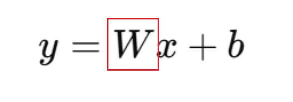
Tags: 导入Edge::1-27
假设输入 x 是一个3维向量：[x1,x2,x3]，
偏置 b 是一个2维向量：[b1,b2]，
权重矩阵 W 应该是什么样维度的矩阵？
2×3 的矩阵。
Tags: 导入Edge::1-27
假设 Linear(3, 2)，输入和输出分别是什么维度的向量？
输入是一个3维向量，输出是一个2维向量。
Tags: 导入Edge::1-27
假设 Linear(3, 2)，这个时候权重矩阵 W 它的形状应该是什么样的？
(2,3)。
Tags: 导入Edge::1-27
线性层的权重矩阵 W 的大小为：
W=(output_size,input_size) 还是 W=(input_size, output_size) ?
W=(output_size,input_size) 。
Tags: 导入Edge::1-27
预训练和微调 分别指的是什么意思？ 【分别是使用什么样的数据，然后最终目的是什么？】
Tags: 导入Edge::1-27
预训练 指的是什么意思？
【在什么样的数据中学到了什么？】
预训练： 是让模型在海量无标签数据上学习通用的语言知识（如语法、语义等），这通常是无监督或自监督的过程。
Tags: 导入Edge::1-27
微调 指的是什么意思？
【使用什么样的数据来进行训练，然后运用到哪里？】
微调： 是将预训练好的模型，应用到具体任务（如情感分析、问答、翻译）中，使用带标签的数据进行有监督学习。
Tags: 导入Edge::1-27
预训练和微调 分别主要针对什么？
【分别的目的是什么？】
微调是专注于下游任务的有监督优化，
而预训练主要是学习通用的语言表示。
Tags: 导入Edge::1-27
不算预训练任务，而是模型的第二阶段（fine-tuning）。预训练和微调是两个不同的阶段。
Tags: 导入Edge::1-27
Linear线性层 它的本质是什么？核心操作是什么？将什么向量转换成什么向量？
Linear线性层的本质是一个矩阵： 它的核心操作是矩阵乘法，通过权重矩阵 W 将输入向量线性变换为输出向量。
Tags: 导入Edge::1-27
GPT 两个阶段训练分别是什么？
无监督的预训练是GPT的第一阶段，学习通用语言知识；
有监督微调是第二阶段，用于优化具体下游任务的性能。
Tags: 导入Edge::1-27
nn.embedding 里面的嵌入向量最开始是怎么样的？在训练过程中，是通过优化什么来被调整，这样使得他们更好表达什么？
嵌入向量最开始是随机初始化的，在训练的过程中，模型会通过优化任务的损失函数，逐渐调整这些向量，使它们能更好地表达单词之间的关系。
Tags: 导入Edge::1-27
对于文本分类任务和命名实体识别任务，他们的相似点和区别是什么？
他们本质上来说都属于分类，只不过前者是一个序列对应一个标签，后者的话则是一个序列的每个token都对应一个标签。
Tags: 导入Edge::1-27
自监督学习和无监督学习它们之间的关系是什么？
自监督学习是一种特殊的无监督学习，它通过从数据中生成“伪标签”来进行训练。模型从输入数据中构造出训练目标。
Tags: 导入Edge::1-27
GPT的无监督学习任务是什么样的？
GPT的任务是基于文本中的前几个词预测下一个词，这种预测任务是由数据本身定义的，并不需要人工标注。
Tags: 导入Edge::1-27
GPT的无监督预训练为何是自监督？
GPT的训练目标是预测文本中的下一个token（即“语言模型”目标）。这个目标是通过数据本身自动生成的，无需人工标注。
Tags: 导入Edge::1-27
GPT中的无监督预训练更准确地描述成什么？
自监督学习。
Tags: 导入Edge::1-27
GPT的无监督预训练目标 是什么？【是通过什么来预测什么？】
通过前N-1个token预测第N个token。
Tags: 导入Edge::1-27
GPT的无监督预训练任务：语言模型（Language Modeling）
目标是学习什么？【学习输入序列中每个位置上的什么？】
学习输入序列中每个位置上的token的条件概率分布：
P(xt∣x1,x2,…,xt−1)
Tags: 导入Edge::1-27
假设输入是一段文本：“The cat is on the mat”。
GPT的无监督预训练任务是怎么样的？
模型会构造训练样本：
- 输入：The，输出：cat
- 输入：The cat，输出：is
- 输入：The cat is，输出：on
（以此类推）模型通过学习每个输入序列生成对应的下一个token。
Tags: 导入Edge::1-27
单向语言模型 vs 双向语言模型，
分别举出一个例子，并且说出原因。
GPT采用的是单向语言模型，它只能从左到右利用上下文进行预测，不能看到右侧的词。像BERT这样的模型则是双向语言模型，它可以同时利用左侧和右侧的上下文信息。
Tags: 导入Edge::1-27
将GPT的训练过程类比为一个学生的学习英语的过程，是什么样的？
- 无监督预训练（预习阶段）：学生通过大量阅读和积累（阅读小说、杂志等），学会了语言的基本规则和表达方式。
- 有监督微调（考试冲刺阶段）：学生专注于特定的考试内容，比如语法填空或作文题，进行针对性强化练习，以达到优秀的考试表现。
Tags: 导入Edge::1-27
自回归模型里面三个特点分别是什么？
单向性： 自回归模型只能利用序列中已经生成的内容，无法直接使用后续信息。这种单向性是模型的特点，但也可能限制其在全局上下文理解上的能力。逐步生成： 每一步的生成都依赖于之前生成的内容，因此生成过程是递归的。因果性： 自回归模型只依赖于历史数据，符合因果关系。
Tags: 导入Edge::1-27
自回归模型里面单向性 这个特点具体讲的是什么？
单向性： 自回归模型只能利用序列中已经生成的内容，无法直接使用后续信息。这种单向性是模型的特点，但也可能限制其在全局上下文理解上的能力。
Tags: 导入Edge::1-27
自回归模型里面逐步生成 这个特点具体讲的是什么？ 【每一步的生成都依赖于什么？】
逐步生成： 每一步的生成都依赖于之前生成的内容，因此生成过程是递归的。
Tags: 导入Edge::1-27
自回归模型里面因果性 这个特点具体讲的是什么？
因果性： 自回归模型只依赖于历史数据，符合因果关系。
Tags: 导入Edge::1-27
面试的时候回答自回归模型的特点，至少包含两个特点，分别是什么？
自回归模型的单向性和逐步生成特点。
Tags: 导入Edge::1-27
BERT模型有 几层Transformer编码器，每层包括什么？
12层，包含自注意力机制和前馈网络。
Tags: 导入Edge::1-27
BERT模型特征维度为 768，那么这意味着什么？
每个token在输入BERT模型后会被表示为一个 768维向量。
Tags: 导入Edge::1-27
BERT模型里面，每个Head的维度 是如何计算的？
特征维度 / Head数。
Tags: 导入Edge::1-27
BERT模型里面，总参数量是指什么？
【是哪两项的总和？包括哪三个层？】
指的是模型中所有权重和偏置项的总数，包含了嵌入层、Transformer层中的参数和输出层参数。
Tags: 导入Edge::1-27
BERT模型里面，总参数量是如何进行计算？
【哪三个层】
总参数量 = 嵌入层参数 + 每层Transformer参数 × 层数 + 输出层参数。
Tags: 导入Edge::1-27
BERT模型里面，句子对的构造，句子b包括哪两个部分？
Tags: 导入Edge::1-27
BERT模型里面，句子对的正负样本的比例是怎么样的？
按照1:1的比例构造正负样本（50%是正样本，50%是负样本）。
Tags: 导入Edge::1-27
BERT模型里面，在NSP任务中，每个训练样本由两部分组成：分别是什么？
句子A和句子B。
Tags: 导入Edge::1-27
BERT模型里面，在NSP任务中，每个训练样本由两部分组成：句子A和句子B。他们两个分别来源是什么？
句子A是从语料库中提取的一段文本开头的句子。句子B则有两种来源：- 50%是正样本（标记为IsNext）：句子B是句子A在原始文档中的真实后续句子。
- 50%是负样本（标记为NotNext）：句子B是从语料库中随机抽取的一个句子，通常与句子A无关。
Tags: 导入Edge::1-27
BERT模型里面，在NSP任务中，输出层是一个什么类型的任务？ 最终输出哪两种概率？
输出层是一个二分类任务，模型最终会输出两种概率：- IsNext（B是A的真实后续句子）。
- NotNext（B是从语料库随机抽取的句子）。
Tags: 导入Edge::1-27
RoBERTa 模型里面是否有NSP任务以及为什么？
取消了NSP任务，专注于更复杂的MLM任务。
因为研究表明，NSP对BERT的提升有限，尤其是对一些单句任务（如分类或生成任务）贡献较小
Tags: 导入Edge::1-27
BERT模型里面，在NSP任务中，句子B 50%概率是正样本，50%概率是负样本。请问如何理解这个正样本和负样本？
句子B 如果是句子A的真实的后续，那么它就是正样本。
如果句子B是随机抽取的，那么句子B就是负样本。
Tags: 导入Edge::1-27
BERT模型里面，pooler output 是如何得到的？
【对哪里的哪个token进行什么处理？】
对 last hidden state 中 [CLS] token 的隐藏状态进行额外处理的结果，通常是通过一个全连接层和 tanh 激活函数 来处理 ，得到一个紧凑的特征表示，用于后续的分类任务。
Tags: 导入Edge::1-27
BERT模型里面，pooler output 是 使用了 CLS token 的表示 经过池化操作得到的，在这里如何理解这个池化的含义？
全连接层 + tanh 激活。
Tags: 导入Edge::1-27
BERT模型里面，last hidden state 中包含了具体哪些信息？
序列中所有token的信息，包括 [CLS] token 和其他token（如句子中的每个词或子词）。
Tags: 导入Edge::1-27
BERT模型里面，pooler output 是如何得到的，具体过程？
last hidden state 中 CLS token的表示 应用池化操作得到的。这个池化操作并不是传统意义上的最大池化或平均池化，而是通过一个全连接层（Linear Layer）后接tanh激活函数来处理 [CLS] token 的隐藏状态。
Tags: 导入Edge::1-27
在BERT中对CLS token的表示进行池化时，使用的是具体哪两个过程？
全连接层 + 激活函数。
Tags: 导入Edge::1-27
在BERT中,last hidden state 和 pooler output，分别包含的是什么信息？
- last hidden state 包含所有token的表示，[CLS] token的表示可以用于分类任务。
- pooler output 是对 CLS token的 last hidden state 经过池化处理后的结果，通常用于分类任务。
Tags: 导入Edge::1-27
在BERT中，pooler output 的维度是 什么样的？
(batch_size, embedding_dim)。
Tags: 导入Edge::1-27
在BERT中，pooler output 是对 CLS token 的 什么做了池化（通过一个全连接层和tanh激活）后得到的结果？
最后一层隐藏状态。
Tags: 导入Edge::1-27
在BERT中，last hidden state 的维度是 什么样的？
(batch_size, seq_len, embedding_dim)。
Tags: 导入Edge::1-27
在BERT中，pooler output 是基于哪个token的什么状态经过什么操作得到的？
基于 CLS token 的最后隐藏状态 经过池化操作（全连接层 + tanh激活）后得到的结果。